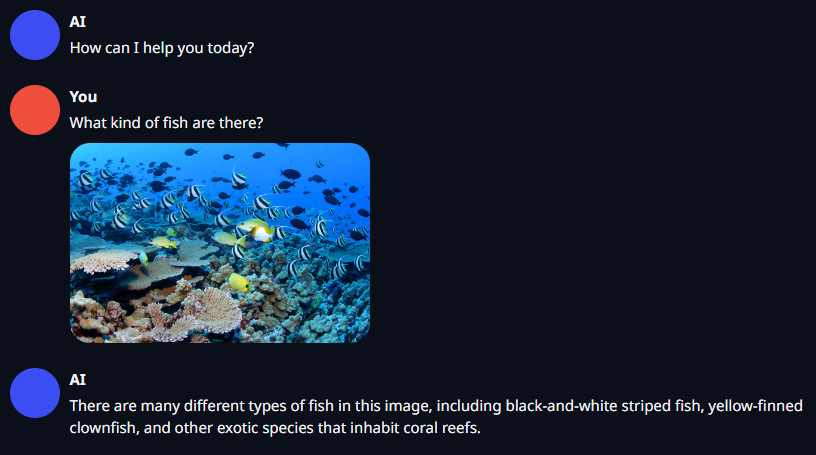
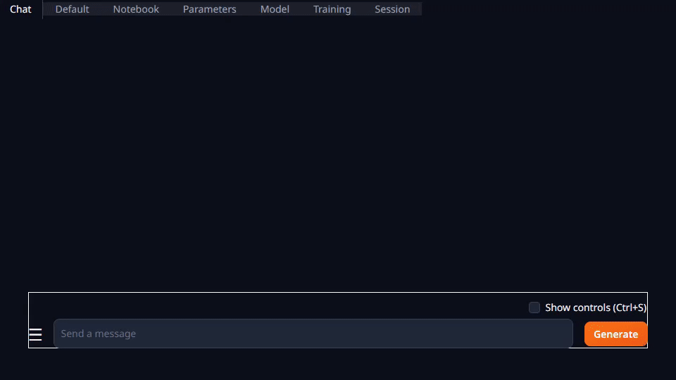
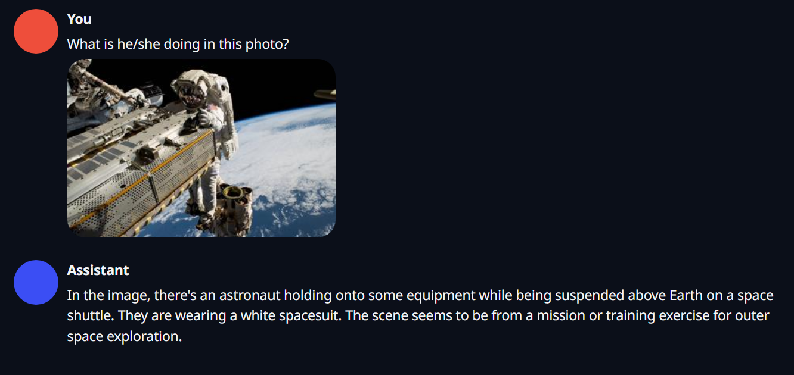

Tutorial - LLaVA
LLaVA is a popular multimodal vision/language model that you can run locally on Jetson to answer questions about image prompts and queries. Llava uses the CLIP vision encoder to transform images into a common embedding space so that its LLM (which is the same as Llama architecture) can understand text. Below we'll cover a few methods to run Llava on Jetson, using quantization for improved performance.
- Chat with Llava using
text-generation-webui - Run from the terminal with
llava.serve.cli - Quantized GGUF models with
llama.cpp - Optimized Multimodal Pipeline with
local_llm
| Llava-1.5-13B (Jetson AGX Orin) | Quantization | Tokens/sec | Memory |
|---|---|---|---|
text-generation-webui |
4-bit (GPTQ) | 2.3 | 9.7 GB |
llava.serve.cli |
FP16 (None) | 4.2 | 27.7 GB |
llama.cpp |
4-bit (Q4_K) | 10.1 | 9.2 GB |
local_llm |
4-bit (MLC) | 21.1 | 8.7 GB |
The latest Llava-1.5 is used in this tutorial. It comes in 7B and 13B variants, however the 13B model has significantly improved accuracy.

Clone and set up jetson-containers
git clone https://github.com/dusty-nv/jetson-containers
cd jetson-containers
sudo apt update; sudo apt install -y python3-pip
pip3 install -r requirements.txt
1. Chat with Llava using text-generation-webui
What you need
-
One of the following Jetson devices:
Jetson AGX Orin (64GB) Jetson AGX Orin (32GB) Jetson Orin NX (16GB)
-
Running one of the following versions of JetPack:
JetPack 5 (L4T r35.x) JetPack 6 (L4T r36.x)
-
Sufficient storage space (preferably with NVMe SSD).
6.2GBfortext-generation-webuicontainer image- Space for models
- CLIP model :
1.7GB - Llava-v1.5-13B-GPTQ model :
7.25GB
- CLIP model :
The oobabooga chat UI from the LLM tutorial has a multimodal extension for Llava, and it supports AutoGPTQ quantization. If you already used text-generation-webui before 12/2023, do sudo docker pull $(./autotag text-generation-webui) to update to the latest container.
Download Model
./run.sh --workdir=/opt/text-generation-webui $(./autotag text-generation-webui) \
python3 download-model.py --output=/data/models/text-generation-webui \
TheBloke/llava-v1.5-13B-GPTQ
Start Web UI with Multimodal Extension
./run.sh --workdir=/opt/text-generation-webui $(./autotag text-generation-webui) \
python3 server.py --listen \
--model-dir /data/models/text-generation-webui \
--model TheBloke_llava-v1.5-13B-GPTQ \
--multimodal-pipeline llava-v1.5-13b \
--loader autogptq \
--disable_exllama \
--verbose
Go to Chat tab, drag and drop an image of your choice into the Drop Image Here area, and your question in the text area above and hit Generate.

Result

2. Run from the terminal with llava.serve.cli
What you need
-
One of the following Jetson:
Jetson AGX Orin 64GB Jetson AGX Orin (32GB)
-
Running one of the following versions of JetPack:
JetPack 5 (L4T r35.x) JetPack 6 (L4T r36.x)
-
Sufficient storage space (preferably with NVMe SSD).
6.1GBforllavacontainer image- Space for models
- 7B model :
14GB, or - 13B model :
26GB
- 7B model :
This example uses the upstream Llava codebase to run the original, unquantized Llava models from the command-line. As such, it uses more memory due to using FP16 precision, and is provided mostly as a reference for debugging. See the Llava container readme for more infomation.
llava-v1.5-7b
./run.sh $(./autotag llava) \
python3 -m llava.serve.cli \
--model-path liuhaotian/llava-v1.5-7b \
--image-file /data/images/hoover.jpg
llava-v1.5-13b
./run.sh $(./autotag llava) \
python3 -m llava.serve.cli \
--model-path liuhaotian/llava-v1.5-13b \
--image-file /data/images/hoover.jpg
3. Quantized GGUF models with llama.cpp
llama.cpp is one of the faster LLM API's, and can apply a variety of quantization methods to Llava to reduce its memory usage and runtime. It uses CUDA for LLM inference on the GPU. There are pre-quantized versions of Llava-1.5 available in GGUF format for 4-bit and 5-bit:
./run.sh --workdir=/opt/llama.cpp/bin $(./autotag llama_cpp:gguf) \
/bin/bash -c './llava-cli \
--model $(huggingface-downloader mys/ggml_llava-v1.5-13b/ggml-model-q4_k.gguf) \
--mmproj $(huggingface-downloader mys/ggml_llava-v1.5-13b/mmproj-model-f16.gguf) \
--n-gpu-layers 999 \
--image /data/images/hoover.jpg \
--prompt "What does the sign say"'
| Quantization | Bits | Response | Tokens/sec | Memory |
|---|---|---|---|---|
Q4_K |
4 | The sign says "Hoover Dam, Exit 9." | 10.17 | 9.2 GB |
Q5_K |
5 | The sign says "Hoover Dam exit 9." | 9.73 | 10.4 GB |
A lower temperature like 0.1 is recommended for better quality (--temp 0.1), and if you omit --prompt it will describe the image:
./run.sh --workdir=/opt/llama.cpp/bin $(./autotag llama_cpp:gguf) \
/bin/bash -c './llava-cli \
--model $(huggingface-downloader mys/ggml_llava-v1.5-13b/ggml-model-q4_k.gguf) \
--mmproj $(huggingface-downloader mys/ggml_llava-v1.5-13b/mmproj-model-f16.gguf) \
--n-gpu-layers 999 \
--image /data/images/lake.jpg'
In this image, a small wooden pier extends out into a calm lake, surrounded by tall trees and mountains. The pier seems to be the only access point to the lake. The serene scene includes a few boats scattered across the water, with one near the pier and the others further away. The overall atmosphere suggests a peaceful and tranquil setting, perfect for relaxation and enjoying nature.
You can put your own images in the mounted jetson-containers/data directory. The C++ code for llava-cli can be found here. The llama-cpp-python bindings also support Llava, however they are significantly slower from Python for some reason (potentially the pre/post-processing)
4. Optimized Multimodal Pipeline with local_llm
The optimized local_llm container using MLC/TVM for quantization and inference provides the highest performance in this tutorial on Jetson. It efficiently manages the CLIP embeddings and KV cache. You can find the Python code for the chat program used in this example here.
./run.sh $(./autotag local_llm) \
python3 -m local_llm --api=mlc \
--model liuhaotian/llava-v1.5-13b
This starts an interactive console-based chat with Llava, and on the first run the model will automatically be downloaded from HuggingFace and quantized using MLC and W4A16 precision (which can take some time). See here for command-line options for the local_llm __main__.py
You'll end up at a >> PROMPT: in which you can enter the path or URL of an image file, followed by your question about the image. You can follow-up with multiple questions about the same image. Llava-1.5 does not understand multiple images in the same chat, so when changing images, first reset the chat history by entering clear or reset as the prompt. You can also automate this from the command-line:
./run.sh $(./autotag local_llm) \
python3 -m local_llm --api=mlc \
--model liuhaotian/llava-v1.5-13b \
--prompt '/data/images/hoover.jpg' \
--prompt 'what does the road sign say?' \
--prompt 'what kind of environment is it?' \
--prompt 'reset' \
--prompt '/data/images/lake.jpg' \
--prompt 'please describe the scene.' \
--prompt 'are there any hazards to be aware of?'
Results [hoover.jpg] [lake.jpg]
![[hoover.jpg]](https://github.com/dusty-nv/jetson-containers/blob/master/data/images/hoover.jpg){kind=link}
![[lake.jpg]](https://github.com/dusty-nv/jetson-containers/blob/master/data/images/lake.jpg){kind=link}
>> PROMPT: /data/images/hoover.jpg
>> PROMPT: what does the road sign say?
The road sign says "Hoover Dam exit 2".
>> PROMPT: what kind of environment is it?
It is a mountainous environment, with a road going through the mountains.
>> PROMPT: /data/images/lake.jpg
>> PROMPT: please describe the scene.
The image features a wooden pier extending out into a large body of water, possibly a lake. The pier is situated near a forest, creating a serene and peaceful atmosphere. The water appears to be calm, and the pier seems to be the only structure in the area. The scene is captured during the day, with the sunlight illuminating the landscape.
>> PROMPT: are there any hazards to be aware of?
The image does not provide any specific hazards to be aware of. However, it is essential to be cautious while walking on a pier, as it may be slippery or have loose boards. Additionally, one should be mindful of the water depth and currents, as well as any potential wildlife in the area.
Benchmarks
| Model | Response | Tokens/sec | Memory |
|---|---|---|---|
llava-1.5-7b |
The road sign says "Hoover Dam 1/2 Mile." | 42.2 | 6.4 GB |
llava-1.5-13b |
The road sign says "Hoover Dam exit 2". | 21.1 | 8.7 GB |
JSON
Llava-1.5 can also output JSON, which the authors cover in the paper, and can be used to programatically query information about the image:
./run.sh $(./autotag local_llm) \
python3 -m local_llm --api=mlc \
--model liuhaotian/llava-v1.5-13b \
--prompt '/data/images/hoover.jpg' \
--prompt 'extract any text from the image as json'
{
"sign": "Hoover Dam",
"exit": "2",
"distance": "1 1/2 mile"
}
Web UI
To use local_llm with a web UI instead, see the Voice Chat section of the documentation: